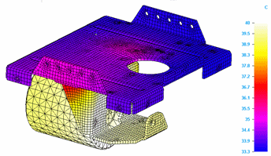
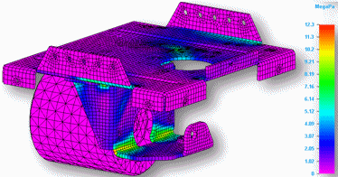
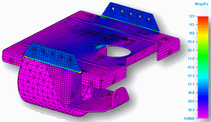
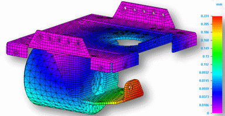
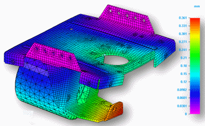

Coupled studies
You can use a coupled study to apply the results of one type of analysis as an input to another type of analysis. For example, in Solid Edge Simulation you can use a coupled study to evaluate the effect that heat has on the structural stress and displacement of a part. A coupled study combines thermal analysis with structural analysis, and manages the inputs, processing, and outputs within a single study.
Creating coupled studies
Coupled studies are created when you select one of the study types with a plus (+) in the study type name using the Create Study dialog box. For example, the following coupled study types combine a steady state heat transfer analysis with a linear static analysis or linear buckling analysis in a single study:
-
Steady State Heat Transfer + Linear Static
-
Steady State Heat Transfer + Linear Buckling
Coupled studies that combine thermal analysis with structural analysis are referred to as thermal stress analysis.
Identifying coupled studies
Coupled studies are listed differently in the Simulation tree-view pane to distinguish them from non-coupled studies.
|
Non-coupled study names |
Coupled study names |
|
Static Study 1 |
Heat Transfer-Static Study 1 |
|
Heat Transfer Study 1 |
Heat Transfer-Buckling Study 1 |
Result plots in coupled studies
Coupled studies produce multiple collections of results plots in the Simulation Results environment.
-
A Steady State Heat Transfer + Linear Static study produces Thermal and Static plots in the Results collector.
-
A Steady State Heat Transfer + Linear Buckling study produces Thermal, Static, and Eigenvalues plots in the Results collector.
See Plotting results for examples.
Coupled study example
The following table compares the results of a structural study with a thermal coupled study. The structural study only shows stress and displacement results. The coupled study first finds the temperature distribution results of the thermal study, and then it applies these results as a direct input load to the linear static structural study.
|
Structural study |
Thermal coupled study |
|
Study type=Linear Static |
Study type=Steady State Heat Transfer + Linear Static |
|
Shows the stress results from structural loads and constraints. One force load is applied to the top face of the bracket, and fixed constraints are applied to both flanges. |
Shows the effect that applied heat loads (temperature and convection) have on the structural loads (force) and constraints (fixed) applied to the model. |
|
Temperature distribution results—Not applicable. |
Temperature distribution results.  |
|
Stress results, no heat.  |
With heat applied, stress values increase.  |
|
Displacement results, no heat.  |
With heat applied, displacement values increase.  |
See the following help topics to learn more:
How do I
Verify simulation material propertiesCreate a study
Create a study using a simplified model
Define a coupled study for thermal stress analysis
Assign units in studies
Define and review a transient heat study
Define a harmonic frequency response study
Learn more
Creating and using studiesUsing materials in studies
Modifying studies
Structural studies
Thermal studies
Using steady state heat transfer studies
Harmonic response studies
Create and solve a study using GD optimized model
Create and solve a study using an STL model
Defining thermal studies
Look up more details
Create Study (or Modify Study) dialog boxTransient Heat Options dialog box
Options: Harmonic Frequency Analysis dialog box